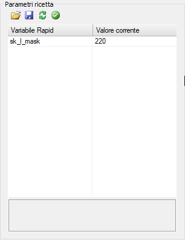
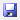

Per consentire il settaggio fine di alcune impostazioni, o contemplare una naturale variabilità delle lenti, è stato predisposto un meccanismo per presentare in Skipper alcune variabili di interesse della ricetta. Tutte le variabili presenti nel modulo RECIPE che iniziano con il prefisso sk_ vengono visualizzate e sono modificabili nel pannello Parametri della ricetta. Modificando il valore di una variabile questa cambia di colore rispettando la convenzione utilizzata in Skipper per tutti i parametri


per salvare il valore modifica in maniera permanente: viene modificato il valore iniziale della variabile e, se confermato nel messaggio di richiesta, salvata la ricetta in archivio.